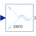

FromSpacePhasorConversion: space phasor -> three phase |

|
Information
This information is part of the Modelica Standard Library maintained by the Modelica Association.
Transformation of space phasor and zero sequence value to quasi stationary multi phase values (voltages or currents).Connectors (2)
| u |
Type: RealInput[2] |
|
|---|---|---|
| y |
Type: ComplexOutput[m] |